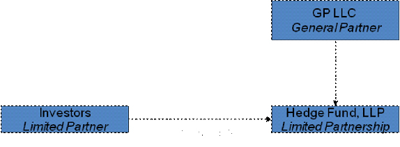
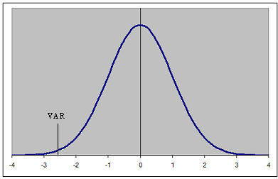

Although hedge funds usually get negative media focus, many hedge funds are actually very good investments and can be an integral part of a well-diversified portfolio. But what exactly is a hedge fund, and what are some of the factors one should know about hedge funds before making an investment? In the following tutorial, we'll introduce basic hedge fund characteristics and strategies as well as some simple guidelines for evaluating hedge funds. By no means should this tutorial form the basis of any due diligence process for investing in hedge funds, but it can serve as a guide leading to more fruitful conversations with an investment manager that has experience with these vehicles.
Hedge funds can be very risky investments and many investors have been burned by huge hedge fund blow-ups. On many occasions, investors follow the herd mentality of chasing returns, plunging more and more money into a high-performing fund, without regard for how the performance was obtained and – more important – whether the performance can be repeated in the future.
In this tutorial, we won't expect to create an expert hedge fund analyst out of you, but if you are new to hedge funds or you or your advisor are considering investing in hedge funds, this tutorial will give you some basic knowledge of how they are structured, their strategies and characteristics, as well as how to use them in your portfolio. (For more background, read Introduction To Hedge Funds – Part One and Introduction to Hedge Funds – Part Two.)
Structurally, a hedge fund has some similarities to a mutual fund. For example, just like a mutual fund, a hedge fund is a pooled investment vehicle that makes investments in equities, bonds, options and a variety of other securities. It can also be run by a separate manager, much like a sub-advisor runs a mutual fund that is distributed by a large mutual fund company. That, however, is basically where the similarities end. The range of investment strategies available to hedge funds and the types of positions they can take are quite broad and in many cases, very complex. We will focus on specific strategies later in this tutorial, so for now we'll focus on how hedge funds are structured.
Organizational Structure
The typical hedge fund structure is really a two-tiered organization.
|  |
| Figure 1: Hedge Fund Organizational Structure |
| Source: Investopedia, 2009. |
The general/limited partnership model is the most common structure for the pool of investment funds that make up a hedge fund. In this structure, the general partner assumes responsibility for the operations of the fund, while limited partners can make investments into the partnership and are liable only for their paid-in amounts. As a rule, a general/limited partnership must have at least one GP and one LP, but can have multiple GPs and many LPs. There is an SEC rule, however, that generally limits investors to 99 in order to be excluded from SEC registration. (Learn more about the SEC in Policing The Securities Market: An Overview Of The SEC.)
The second component of the two-tiered structure is the structure of the general partnership. The typical structure used for the general partner is a limited liability company. An LLC is very similar to a subchapter S corporation in that it is a flow-through tax entity and investors are limited in liability to the amount of their investment. The general partner's responsibility is to market and manage the fund, and perform any functions necessary in the normal course of business, including hiring a fund manager (oftentimes a related company) and managing the administration of the fund's operations.
Fee Structure
Hedge funds also differ quite radically from mutual funds in how they charge fees. Their fee structure is one of the main reasons why talented money managers decide to open their own hedge funds to begin with. Not only are the fees paid by investors higher than they are for mutual funds, they include some additional fees that mutual funds don't even charge.
Management Fee
The management fee for a hedge fund is for the same service that the management fee covers in mutual funds. The difference is that hedge funds typically charge a management fee of 2% of assets managed – and in some cases even higher, if the manager is in high demand and has had a very good track record. This fee alone makes managing a hedge fund attractive, but it is the next fee that really makes it a profitable endeavor for good fund managers.
Incentive Fee
Most if not all hedge funds charge an incentive fee of anywhere between 10-20% of fund profits, and some hedge funds have even gone as high as 50%. The idea of the incentive fee is to reward the hedge fund manager for good performance, and if the fund's performance is attractive enough, investors are willing to pay this fee. For example, if a hedge fund manager generates a 20% return per year, after management fee, the hedge fund manager will collect 4% of those profits, leaving the investor with a 16% net return. In many cases, this is an attractive return despite the high incentive fee, but with more mediocre managers entering the industry in search of fortune, investors have more often than not been disappointed with net returns on many funds.
There is one caveat to the incentive fee, however. A manager only collects an incentive fee for profits exceeding the fund's previous high, called a high-water mark. This means that if a fund loses 5% from its previous high, the manager will not collect an incentive fee until he or she has first made up the 5% loss. In addition, some managers must clear a hurdle rate, such as the return on U.S. Treasuries, before they collect any incentive fees.
Hedge funds often follow the so-called "two and twenty" structure – where managers receive 2% of net asset value managed and 20% of profits, though as mentioned, these fees can vary among hedge funds. (For tips on paying fewer fees, see Stop Paying High Mutual Fund Fees.)
Term Structure
The terms offered by a hedge fund are so unique that each fund can be completely different from another, but they usually are based on the following factors:
Subscriptions and Redemptions
Hedge funds do not have daily liquidity like mutual funds do. Some hedge funds can have subscriptions and redemptions monthly, while others accept them only quarterly. The terms of each hedge fund should be consistent with the underlying strategy being used by the manager. The more liquid the underlying investments, the more frequent the subscription/redemption terms should be. Each fund also specifies the number of days required for redemption, ranging from 15 days to 180 days, and this too should be consistent with the underlying strategy. Requiring redemption notices allows the hedge fund manager to efficiently raise capital to cover cash needs.
Lock-Ups
Some funds require up to a two-year "lock-up" commitment, but the most common lock-up is limited to one year. In some cases, it could be a hard lock, preventing the investor from withdrawing funds for the full time period, while in other cases, an investor can withdraw funds before the expiration of the lock-up period provided they pay a penalty. This second form of lock-up is called a soft lock and the penalty can range from 2-10% in some extreme cases.
Conclusion
There are a variety of different combinations that can be used to structure a hedge fund and its related companies and investors. The above summary briefly describes one very common method used to structure the hedge fund and its management company. There are many others and just as hedge funds are creative with their investment strategies, they can also be very creative with their organizational structure. The takeaway of this section is to stress that each corporate structure is unique and should be evaluated along with all other factors covered in the rest of this tutorial.
Hedge funds use a variety of different strategies, and each fund manager will argue that he or she is unique and should not be compared to other managers. However, we can group many of these strategies into certain categories that assist an analyst/investor in determining a manager's skill and evaluating how a particular strategy might perform under certain macroeconomic conditions. The following is loosely defined and does not encompass all hedge fund strategies, but it should give the reader an idea of the breadth and complexity of current strategies. (Learn more in Taking A Look Behind Hedge Funds.)
Equity Hedge
The equity hedge strategy is commonly referred to as long/short equity and although it is perhaps one of the simplest strategies to understand, there are a variety of sub-strategies within the category.
– In this strategy, hedge fund managers can either purchase stocks that they feel are undervalued or sell short stocks they deem to be overvalued. In most cases, the fund will have positive exposure to the equity markets – for example, having 70% of the funds invested long in stocks and 30% invested in the shorting of stocks. In this example, the net exposure to the equity markets is 40% (70%-30%) and the fund would not be using any leverage (Their gross exposure would be 100%). If the manager, however, increases the long positions in the fund to, say, 80% while still maintaining a 30% short position, the fund would have gross exposure of 110% (80%+30% = 110%), which indicates leverage of 10%.
There is a second way to achieve market neutrality, and that is to have zero beta exposure. In this case, the fund manager would seek to make investments in both long and short positions so that the beta measure of the overall fund is as low as possible. In either of the market-neutral strategies, the fund manager's intention is to remove any impact of market movements and rely solely on his or her ability to pick stocks.
Global Macro
Generally speaking, these are the strategies that have the highest risk/return profiles of any hedge fund strategy. Global macro funds invest in stocks, bonds, currencies, commodities, options, futures, forwards and other forms of derivative securities. They tend to place directional bets on the prices of underlying assets and they are usually highly leveraged. Most of these funds have a global perspective and, because of the diversity of investments and the size of the markets in which they invest, they can grow to be quite large before being challenged by capacity issues. Many of the largest hedge fund "blow-ups" were global macros, including Long-Term Capital Management and Amaranth Advisors. Both were fairly large funds and both were highly leveraged. (For more, read Massive Hedge Fund Failures and Losing The Amaranth Gamble.)
Relative Value Arbitrage
This strategy is a catchall for a variety of different strategies used with a broad array of securities. The underlying concept is that a hedge fund manager is purchasing a security that is expected to appreciate, while simultaneously selling short a related security that is expected to depreciate. Related securities can be the stock and bond of a specific company; the stocks of two different companies in the same sector; or two bonds issued by the same company with different maturity dates and/or coupons. In each case, there is an equilibrium value that is easy to calculate since the securities are related but differ in some of their components.
Let's look at a simple example:
| Price | Coupon | Term | Current Interest Rate |
| $1,000.00 | 6% | 30 years | 6% |
| $1,276.76 | 8% | 30 years | 6% |
| Coupons are paid every six months. | |||
| Maturity is assumed to be the same for both bonds. | |||
Assume that a company has two outstanding bonds: one pays 8% and the other pays 6%. They are both first-lien claims on the company's assets and they both expire on the same day. Since the 8% bond pays a higher coupon, it should sell at a premium to the 6% bond. When the 6% bond is trading at par ($1,000), the 8% bond should be trading at $1,276.76, all else being equal. However, the amount of this premium is often out of equilibrium, creating an opportunity for a hedge fund to enter into a transaction to take advantage of the temporary price differences. Assume that the 8% bond is trading at $1,100 while the 6% bond is trading at $1,000. To take advantage of this price discrepancy, a hedge fund manager would buy the 8% bond and short sell the 6% bond in order to take advantage of the temporary price differences. I have used a fairly large spread in the premium to reflect a point. In reality, the spread from equilibrium is much narrower, driving the hedge fund to apply leverage to generate a meaningful levels of returns.
Convertible Arbitrage
This is one form of relative value arbitrage. While some hedge funds simply invest in convertible bonds, a hedge fund using convertible arbitrage is actually taking positions in both the convertible bonds and the stocks of a particular company. A convertible bond can be converted into a certain number of shares. Assume a convertible bond is selling for $1,000 and is convertible into 20 shares of company stock. This would imply a market price for the stock of $50. In a convertible arbitrage transaction, however, a hedge fund manager will purchase the convertible bond and sell the stock short in anticipation of either the bond's price increasing, the stock price decreasing, or both.
Keep in mind that there are two additional variables that contribute to the price of a convertible bond other than the price of the underlying stock. For one, the convertible bond will be impacted by movements in interest rates, just like any other bond. Secondly, its price will also be impacted by the embedded option to convert the bond to stock, and the embedded option is influenced by volatility. So, even if the bond was selling for $1,000 and the stock was selling for $50 – which in this case is equilibrium – the hedge fund manager will enter into a convertible arbitrage transaction if he or she feels that 1) the implied volatility in the option portion of the bond is too low, or 2) that a reduction in interest rates will increase the price of the bond more than it will increase the price of the stock.
Even if they are incorrect and the relative prices move in the opposite direction because the position is immune from any company-specific news, the impact of the movements will be small. A convertible arbitrage manager, then, has to enter into a large number of positions in order to squeeze out many small returns that add up to an attractive risk-adjusted return for an investor. Once again, as in other strategies, this drives the manager to use some form of leverage to magnify returns. (Learn the basics of convertibles in Convertible Bonds: An Introduction. Read about hedging details at Leverage Your Returns With A Convertible Hedge.)
Distressed
Hedge funds that invest in distressed securities are truly unique. In many cases, these hedge funds can be heavily involved in loan workouts or restructurings, and may even take positions on the board of directors of companies in order to help turn them around. (You can see a little more about these activities at Activist Hedge Funds.)
That's not to say that all hedge funds do this. Many of them purchase the securities in the expectation that the security will increase in value based on fundamentals or current management's strategic plans.
In either case, this strategy involves purchasing bonds that have lost a considerable amount of their value because of the company's financial instability or investor expectations that the company is in dire straits. In other cases, a company may be coming out of bankruptcy and a hedge fund would be buying the low-priced bonds if their evaluation deems that the company's situation will improve enough to make their bonds more valuable. The strategy can be very risky as many companies do not improve their situation, but at the same time, the securities are trading at such discounted values that the risk-adjusted returns can be very attractive. (Learn more about why funds take on these risks at Why Hedge Funds Love Distressed Debt.)
Conclusion
There are a variety of hedge fund strategies, many of which are not covered here. Even those strategies that were described above are described in very simplistic terms and can be much more complicated than they seem. There are also many hedge funds that use more than one strategy, shifting assets based on their assessment of the opportunities available in the market at any given moment. Each of the above strategies can be evaluated based on their potential for absolute returns and can also be evaluated based on macro- and microeconomic factors, sector-specific issues, and even governmental and regulatory impacts. It is within this assessment that the allocation decision becomes crucial in order to determine the timing of an investment and the expected risk/return objective of each strategy.
As mentioned earlier in this tutorial, hedge funds have a few similarities to mutual funds, but there are a larger number of differences, and in this section of the tutorial we'll briefly go over some of the most important. (To learn more about mutual funds, check out Special Feature: Mutual Funds.)
Not Regulated
For starters, hedge funds are not regulated. There are limits to what they can do, such as the number of investors they can have (mentioned earlier), or the fact they cannot advertise to the general public, but they are not regulated by the SEC per se. The implications of this are that an investor should be properly informed about a hedge fund, its strategy and the character of the principals before investing. (Learn more about the SEC in Policing The Securities Markets: An Overview Of The SEC.)
This is probably one of the main reasons why hedge funds are thought to be more risky than a traditional mutual fund investment. However, the strategies that hedge funds use are constantly being characterized as very risky, and in many cases, hedge funds have more conservative strategies than other traditional investments. For the purposes of this tutorial, it will suffice to say that there is no federal or state regulator overseeing the operations of hedge funds, and therefore proper due diligence is critical.
One of the other implications of not being regulated is that hedge funds are neither required to report their underlying positions to the general public nor to any regulatory agency. Even though more and more investors are demanding increased transparency from hedge funds, the really talented hedge fund managers do not want to reveal any of their positions, and often get away with not providing any. Investors, fearful of not participating in the potential returns the manager can generate, often give in and make an investment regardless. In some cases, an investor is large enough to demand position details, in which case a hedge fund manager may take certain precautions, such as the signing of a confidentiality agreement.
Manager Characteristics
When the hedge fund industry was in its infancy, hedge fund managers were the most talented money managers around. It makes sense that it would be the most talented that would strike out on their own, produce the best returns over time, and charge high fees for doing so. Many hedge fund managers had worked for one or several of the large institutions before striking out on their own, and investors were more than happy to move their investments along with them. (Read more about the early days in A Brief History Of The Hedge Fund.)
Over the years, however, an increasing number of mediocre managers have launched hedge funds with the lure of making huge sums of money. For this reason, it is important for an investor to properly evaluate a hedge fund before making an investment. Whereas the term "hedge fund manager" was historically indicative of a manager's talent, that is no longer the case.
Hedge Fund Strategies
Finally, many hedge funds adhere to certain strategies, some of which were discussed earlier in this tutorial. Initially, the offering memorandum that was provided to an investor set specific guidelines regarding a hedge fund's investment strategy and the type of securities it can invest in. Recently, however, with the increase in hedge funds and the whittling away of previously very lucrative profits in certain strategies, hedge funds have begun to expand their investment mandate, allowing them much more flexibility to seek out opportunities.
This means that a
Conclusion
This section of the tutorial gave you a taste of the different characteristics of hedge funds. We have seen acceleration in the rate of change in the hedge fund industry so that many of the characteristics currently prevalent may be altered significantly or change altogether. There has been mention of a reduction in fees, increased regulation, the creation of mutual funds with hedge fund strategies, and a variety of other dynamics that will surely change the characteristics of these vehicles.
If you read the description of most hedge fund investment objectives, there is usually some mention of absolute returns. It is this goal that makes hedge funds so attractive, particularly when markets are down. Unlike mutual funds, which constantly measure themselves against their appropriate benchmarks and comment on their performance versus their benchmarks, hedge funds promise – and are intended – to provide absolute returns regardless of market conditions. That being said, there are always market movements that affect hedge fund performance, either directly or indirectly (via the impact on their underlying investments).
In this section of the tutorial, we'll introduce you to some basic performance measurement techniques for analyzing hedge funds. I cannot stress enough that this process and the due diligence process mentioned in a later section of this tutorial are not sufficient to justify an investment. The entire hedge fund evaluation process goes beyond the scope of this tutorial and encompasses a much deeper level of analysis than what we can cover here.
Absolute Returns
A hedge fund must be evaluated based on absolute returns, but those returns also need to be consistent with the fund's strategy. There are funds that employ strategies that generate very consistent returns over time with limited volatility. An example of this type of fund is an asset-backed lending fund that makes loans and collects payments that are predictable and consistent over time. These funds can generate anywhere from 8-12% per year and are often used as a substitute for fixed income when fixed income is not attractive.
There are other fund strategies that should have similar returns and there are also strategies that should generate higher returns, albeit with much higher volatility. In either case, a hedge fund that describes its strategy as pursuing absolute returns should always have positive returns over 12-month periods, for example. Most hedge funds fall short of these expectations, but in a perfect world, absolute returns should be positive and consistent.
The Sharpe Ratio
One metric that is widely used in the hedge fund world is the Sharpe ratio. The Sharpe ratio measures the amount of return adjusted for each level of risk taken. It is calculated by subtracting the risk-free rate from annualized returns and dividing the result by the standard deviation of the returns. This metric can be applied across hedge funds with different levels of returns and volatility to determine whether the hedge fund is generating any alpha (excess return) by taking on additional risk. A good Sharpe ratio will vary by strategy and anything above 1 tends to be an attractive return. As with other measures, however, the following analyses should be conducted using Sharpe ratio as well as pure returns metrics. (For further reading, see Understanding The Sharpe Ratio and The Sharpe Ratio Can Oversimplify Risk.)
Benchmarks
A very common analysis, and one that is prevalent in the mutual fund world, is to analyze relative returns versus a benchmark. For example, a large-cap manager would be compared to the S&P 500 Index, and his or her performance would be evaluated based on the fund's returns and standard deviation relative to the index. For hedge funds, the relative performance analysis is more challenging but not impossible.
There are a variety of hedge fund indexes that are broken down by strategy in addition to a few aggregate indexes that measure combinations of strategies. The following are those listed by Hedge Fund Research:
| Hedge Fund Strategy Classifications | |||
| Equity Hedge | Even Driven | Macro | Relative Value |
| Equity Market Neutral | Merger Arbitrage | Discretionary Thematic | Fixed Income - Convertible Arbitrage |
| Fundamental Growth | Special Situations | Systematic Diversified | Fixed Income - Asset Backed |
| Energy/Basic Materials | Activist | Systematic Commodity | Volatility |
| Technology / Healthcare | Private Issue / Regulation D | Multi-Strategy | Yield Alternatives |
| Short Bias | Credit Arbitrage | -- | Multi-Strategy |
| Quantitative Directional | Multi-Strategy | -- | -- |
| Multi-Strategy | -- | -- | -- |
| Source: Hedge Fund Research, 2008. | |||
Although most hedge fund marketing materials compare themselves to the S&P 500 to display their outperformance and uncorrelated returns, as investors, we have to understand if the manager is doing well relative to other hedge funds using the same or similar strategies. The first step in this process is to gain enough of an understanding of the hedge fund manager's style in order to determine which hedge fund index, if any, their performance can be compared to. (Learn how this strategy relates to mutual funds in How's Your Mutual Fund Really Doing?)
As mentioned in the section on strategies, many strategies can be categorized into certain buckets, but each fund has a unique strategy. In many cases, some hedge funds may have multiple strategies, making the index decision more difficult. Let's evaluate a simple example: Suppose we are evaluating a long/short equity fund that focuses on event-driven opportunities such as mergers, management buyouts, share buybacks or any other events. There is both a long/short equity index and an event-driven index, and the obvious solution is to run a comparison to both. We could evaluate whether the hedge fund's performance is more like one index than the other. If the fund compares well versus both indexes, however, then additional due diligence is warranted. If the fund compares poorly, then the due diligence process may end there.
Once a hedge fund passes the index test, we could then get more specific in our comparisons by evaluating the hedge fund performance versus peers that use similar strategies. The first level of peer analysis would be a comparison of returns versus other hedge fund managers that state they apply the same strategy. Most databases group hedge funds into categories, which are closely related to the hedge fund indexes mentioned above. However, unlike the hedge fund index, which may only have a limited number of funds, choosing all the funds in a category gives the analysis a much broader perspective and allows the analyst to place the fund in quartiles relative to peers.
Quartile Chart
This analysis can go even deeper and become more sophisticated by carefully evaluating funds and including in the peer analysis only those funds with the most comparable strategies. The number of these hedge funds would be smaller than if using the database categories, but will give the analyst a much better idea of how this fund compares to others.
In the peer analysis, we are looking for hedge funds that consistently perform in the top quartile of their peers on an absolute return comparison, standard deviation, and a variety of other metrics relevant to the analysis. We are looking for performance relative to peers during certain market cycles, as well as performance over short and long periods of time. After all, if a fund manager cannot consistently outperform his or her peers, then chances are we are better served investing in some of the better-performing peers, or, in cases where investing in a hedge fund index is possible, investing in a well-diversified index of funds using a certain strategy. (Learn more in Quantitative Analysis Of Hedge Funds and Peer Comparison Uncovers Undervalued Stocks.)
Conclusion
Evaluating hedge fund performance differs significantly from the analysis used in other investments because of their risk/return characteristics and unique strategies. Robust analytical software will provide not only the metrics mentioned above, but also a variety of other metrics that can add insight into the performance of a particular fund. The list of metrics can be endless and every analyst tends to gravitate toward a group of select favorites that provide enough information to determine whether due diligence should continue.
The further along a fund gets in the due diligence process, the more likely other metrics will be considered and analyzed. Keep in mind that one can analyze any fund to the point of finding something wrong with it and that this is not the goal. Instead, investors should strive to understand metrics well enough to properly evaluate a portfolio.
Hedge funds are often mistaken to be very similar in risk to other types of investments, and although they are often measured through the same types of quantitative metrics, hedge funds have qualitative risks that make them unique to evaluate and analyze. In the following section of this tutorial, we'll evaluate some of the most common risk metrics used in hedge fund analysis as well as some of the broad qualitative issues that should be evaluated. Unfortunately, a full evaluation of all quantitative and qualitative hedge fund risks is beyond the scope of this tutorial.
Standard Deviation
The most common risk measure used in both hedge fund and mutual fund evaluations is standard deviation. Standard deviation in this case is the level of volatility of returns measured in percentage terms, and usually provided on an annual basis. Standard deviation gives a good indication of the variability of annual returns and makes it easy to compare to other funds when combined with annual return data. For example, if comparing two funds with identical annualized returns, the fund with a lower standard deviation would normally be more attractive, if all else is equal. (Learn more in Understanding Volatility Measurements.)
Unfortunately, and particularly when related to hedge funds, standard deviation does not capture the total risk picture of returns. This is because most hedge funds do not have normally distributed returns, and standard deviation assumes a bell-shaped distribution, which assumes the same probability of returns being above the mean as below the mean.
|  |
| Figure 2: Standard Deviation Chart |
| Source: Investopedia, 2009. |
Most hedge fund returns are skewed in one direction or another and the distribution is not as symmetrical. For this reason, there are a number of additional metrics to use when evaluating hedge funds, and even with the additional metrics, some risks simply cannot be measured.
Another measure that provides an additional dimension of risk is called value-at-risk (VaR). VaR measures the dollar-loss expectation that can occur with a 5% probability. In Figure 2, this is the area to the left of the vertical black line on the left of the graph. This provides additional insight into the historical returns of a hedge fund because it captures the tail end of the returns to the down side. It adds another dimension because it makes it possible to compare two funds with different average returns and standard deviation. For example, if Fund A has an average return of 12% and a standard deviation of 6%, and Fund B has an average return of 24% with a standard deviation of 12%, VaR would indicate the dollar amount of loss that is possible with each fund with a 5% probability.
Put another way, VaR would tell you with 95% confidence that your losses would not exceed a certain point. (You can never be 100% confident that you won't lose an entire investment.) It tries to answer the question "Given an investment of a particular return and volatility, what's the worst that could happen?" (Read more about this measure at Introduction To Value At Risk.)
Downside Capture
In relation to hedge funds, and in particular those that claim absolute return objectives, the measure of downside capture can indicate how correlated a fund is to a market when the market declines. The lower the downside capture, the better the fund preserves wealth during market downturns. This metric is figured by calculating the cumulative return of the fund for each month that the market/benchmark was down, and dividing it by the cumulative return of the market/benchmark in the same time frame. Perfect correlation with the market will equate to a 100% downside capture and typically is only possible when comparing the benchmark to itself.
Drawdown
Another measure of a fund's risk is maximum drawdown. Maximum drawdown measures the percentage drop in cumulative return from a previously reached high. This metric is good for identifying funds that preserve wealth by minimizing drawdowns throughout up/down cycles, and gives an analyst a good indication of the possible losses that this fund can experience at any given point in time. Months to recover, on the other hand, gives a good indication of how quickly a fund can recuperate losses. Take the case where a hedge fund has a maximum drawdown of 4%, for example. If it took three months to reach that maximum drawdown, as investors, we would want to know if the returns could be recovered in three months or less. In some cases where the drawdown was sharp, it should take longer to recover. The key is to understand the speed and depth of a drawdown with the time it takes to recover these losses. Do they make sense given the strategy?
Leverage
Finally, leverage is a measure that often gets overlooked, yet is one of the main reasons why hedge funds incur huge losses. As leverage increases, any negative effect in returns gets magnified and worse, and causes the fund to sell assets at steep discounts to cover margin calls. Leverage has been the primary reason why hedge funds like LTCM and Amaranth have gone out of business. Each of these funds may have had huge losses due to the investments made, but chances are these funds could have survived had it not been for the impact of leverage and the effect it had on the liquidation process. (For more on the possible dangers of leverage, see Hedge Funds' Higher Returns Come At A Price.)
Qualitative Factors
Despite the additional quantitative metrics available for the analysis of risk, many of which were not even covered in this tutorial, qualitative risks are as important if not more important, particularly when evaluating hedge funds. Since they are unregulated pools of funds and their strategies are more complex, it is imperative that a thorough analysis be completed on items other than numbers.
One of the most important evaluations is that of management. A fund must have good, strong management just like a company. A talented hedge fund manager with strong stock-picking abilities may perform well, but his contribution to success will be blunted if the fund is not managed properly.
The same could be said of back-office operations, including trading, compliance, administration, marketing, systems, etc. In many cases, a hedge fund will outsource many of the non-investment functions to third-party firms, and we will cover some of these service providers later in the tutorial. But whether they have some of these functions in-house or if they are outsourced, they need to be at a level that allows for the effective functioning of the investment management process. For example, it is critical to have adequate systems to measure risks within a portfolio at any given time, so that the hedge fund manager can feel confident that his strategy is intact throughout. It is also important for trading systems to be able to implement the hedge fund manager's ideas so as to maximize the expected returns of the investments and to minimize trading costs that would otherwise harm returns.
Scale is another measure that is critical to a hedge fund's success, and although one might use quantifiable metrics to evaluate scale, it takes a subjective opinion to determine whether a fund's strategy will be impacted by having too large of a fund and by how much returns will be affected. Hedge fund managers often answer this question by providing both a soft-close limit and a hard-close limit to new funding, in addition to their opinion on how much they can actually manage and still be effective.
A soft close indicates that no additional investors will be allowed into the fund, while a hard close indicates that the fund will no longer accept any additional investments. A fund's capacity, for that matter, should then be higher than the level indicated for a hard close. Otherwise, it would imply that the fund will accept investments up until the point where they can no longer achieve the same returns with their stated strategy. An analyst should be cautious of a hedge fund manager that doesn't close at the time indicated, even if the manager states that he or she is finding opportunities in other areas that will allow for continued growth. In the latter case, you should be cautious of style drift and investigate whether the manager has any skills related to these "new opportunities." (For more insight, read Focus Pocus May Not Lead To Magical Returns.)
Conclusion
When analyzing hedge funds, the important thing to remember is to look beyond the numbers and statistics. An investor can be lured into an inappropriate investment if the qualitative factors mentioned above are not analyzed within the context of the overall strategy. While there are some risks that should be unconditional, such as management integrity, there are others that can vary by hedge fund strategy. Only after a comprehensive and detailed analysis of all risks can one truly understand the investment.
There are a variety of reasons to include hedge funds in a portfolio of otherwise traditional investments. The most cited reason to include them in any portfolio is their ability to reduce risk and add diversification. We have mentioned before how many hedge funds claim absolute return mandates whereby returns are minimally correlated with the equity market. In such a case, hedge funds provide a great diversifier, particularly in times of increased market volatility and/or an outright bear market.
Risk Reduction
In any case, a hedge fund that provides consistent returns increases the level of portfolio stability when traditional investments are underperforming or, at most, are highly unpredictable. There are many hedge fund strategies that generate attractive returns with fixed-income-like volatility. The difference between a hedge fund and traditional fixed income, however, is that during times of low interest rates, fixed income may provide stable returns, but those are typically very low and may not even keep up with inflation.
Hedge funds, on the other hand, can use their more flexible mandates and creativity to generate bond-like returns that outpace inflation on a more consistent basis. The drawback, as previously mentioned, is that hedge funds have certain terms that limit liquidity and are highly opaque. That said, a carefully analyzed hedge fund can be a good way to reduce the risk of a portfolio, but we stress again the importance of proper due diligence. ( Learn more in Due Diligence In 10 Easy Steps.)
Return Enhancement
The other primary reason for adding hedge funds to a portfolio is the ability of some hedge funds to enhance the overall returns of a portfolio. This objective can be considered in two ways. The first way is to maintain a low-risk portfolio but to try to squeeze out some additional returns through the use of a low-volatility hedge fund, as described in the previous section. By adding a hedge fund strategy that substitutes for an otherwise anemic fixed-income return, the returns on a portfolio can be increased slightly without any increase in volatility.
The second way, which is much more exciting, is to add a hedge fund with a high-return strategy to boost overall returns. Some strategies, such as global macro, or commodity trading advisors, can generate some very high returns. These funds generally take directional positions based on their forecast of future prices on stocks, bonds, currencies, and/or commodities and can also invest using derivative instruments. But buyer beware that although these strategies are not correlated to traditional investments, they often exhibit high levels of volatility. The result, when properly allocated, can be a nice boost in returns without a proportional increase in portfolio volatility. (Learn more in Macroeconomic Analysis.)
Allocation Considerations
Adding hedge funds to a portfolio, however, should not be taken lightly. Even a low-volatility hedge fund can explode, as we saw in late 2007, when the subprime mortgage market dried up and even securities that were paying as planned were written down to pennies on the dollar, as investors bid down their prices for fear of foreclosures. (Learn more in The Fuel That Fed The Subprime Meltdown.)
The allocation to hedge funds should consider the overall risk/return objectives of the portfolio, and proper analysis should be conducted to determine how and whether a particular hedge fund fits into the asset mix. A portfolio manager should not only consider the weighting given to any particular investment, but should also evaluate the level of concentration of the overall portfolio, and the correlation of each position relative to each other. For example, in a very concentrated portfolio, it is even more important that each position is less correlated to others, and one must also make sure that positions do not have similar performance drivers.
Yet another consideration when adding hedge funds to a portfolio is the level of gross and net exposure of the overall portfolio. With traditional investments, for example, gross and net exposure will always be the same and will never exceed 100% unless the portfolio adds its own leverage to its positions. With hedge funds, however, many of them employ leverage and in many cases, their net exposure is influenced by their long and short positions.
Therefore, a larger allocation to hedge funds will directly affect the total exposures of an entire portfolio. To use a highly leveraged fund as an example, assume a 10% position in a fund that is 10-times levered. If all other portfolio positions maintain a 100% exposure, the addition of a 10-times levered hedge fund will increase the gross exposure of the entire portfolio to 190%. The implications of this change can be dramatic depending on the strategy being used by the hedge fund.
Conclusion
Hedge funds have a definite place in portfolios for both return enhancement and diversification. They do have some drawbacks that should be seriously considered during the portfolio construction process, but carefully selected hedge funds, or even hedge-fund-like strategies, are a great addition to any portfolio.
The hedge fund due diligence process begins with understanding the characteristics being considered for each portfolio. Understanding the objectives of the portfolio is the key to defining criteria for the proper hedge fund investment. This is one area where the tail should not be wagging the dog. (Learn more in Hedge Fund Due Diligence.)
Define Measurement Criteria
Criteria should be defined in both quantitative and qualitative metrics. The criteria that one can use to measure hedge funds (or any other investment, for that matter) should include: returns, volatility, liquidity terms, fund size, longevity, investment style, investment strategy, fees and asset class. The main objective to consider is whether a hedge fund meets most, if not all, of the criteria set forth in the search. An attractive hedge fund that does not meet the needs of a portfolio may be detrimental to the objectives of the overall portfolio. (Take a basic look at DD examinations in Due Diligence In 10 Easy Steps.)
Once the criteria are clearly defined, there are a variety of databases that contain thousands of hedge fund names and performance data. Such databases include HFR, Hedgefund.net, Morningstar, and CS/Tremont. The number of hedge funds under consideration can be efficiently reduced using any number of filters available on some of the websites or through third-party providers such as Pertrac.
In addition, there are a number of hedge fund marketers that can help find suitable candidates, or they can be found within the platforms of the larger institutional brokerage firms or other industry contacts. There is no shortage of resources to find suitable hedge funds, but it is critical to understand the proper criteria to more efficiently use the resources available.
Requesting Information
The next step in the due diligence process is to contact the hedge fund manager and request information. The most common package of information sent by hedge fund managers includes a one-page summary of performance; a pitchbook (usually a PowerPoint presentation) that describes the firm, its strategy, principals, performance and terms of the investment; offering memorandum; subscription documents; and a due diligence questionnaire (DDQ). The hedge fund may send all of these at once or on request. Initially, an analyst should make sure they receive the pitchbook, offering memo, and DDQ. These three documents should serve as a good starting point to better understand the hedge fund manager and generate additional questions that can be addressed during the conference call. (To learn more about conference calls, read Conference Call Basics.)
The preliminary analysis involves confirmation of the fund's performance to ensure it is consistent with our expectations. We can then review the pitchbook to understand the underlying strategy that generated those returns and to help us identify hedge fund peers with similar strategies. As mentioned in an earlier section of this tutorial, many hedge fund databases characterize hedge funds into certain buckets defined by strategy and/or asset class.
Analyzing Information
The first level of analysis is to compare our hedge fund to those within the same category. The pitch book will then help further refine the strategy so we can selectively pick a more concentrated group of funds for comparison to determine how our fund performed versus other funds with similar strategies. Recall that each hedge fund has unique attributes but for the sake of comparison, we will use our judgment to define a suitable list of comparable funds.
Once we have evaluated the fund's performance and determined that it has performed well relative to our criteria and relative to other similar funds, we can schedule a conference call with the manager to ask additional questions that have arisen during our preliminary analysis. The conference call should be held with the portfolio manager, or rather, the person making investment decisions.
Later in the due diligence process, we will address questions geared toward back-office and operations personnel. For now, we want to understand the manager's investment methodology, his or her thought process and how well each articulates ideas. Keep in mind that a manager won't reveal any proprietary secrets, but he or she should still be able to describe how returns are generated to a level of detail that allows us to determine whether the process makes sense, and more important, whether the process is repeatable. The conference call should last about 45 minutes to one hour. (Learn more in Evaluating A Company's Management, Top 9 Questions Investors Should Ask Management and Why Fund Managers Risk Too Much.)
Qualitative Factors
So far we have focused on mostly quantitative factors for our analysis and although these are very important, we do not want to ignore the intangible issues related to hedge fund investing. There are too many to detail in this tutorial but should include, at a minimum: contagion risk, the risk that unrelated factors could impact the fund; geopolitical risk, particularly for funds with global mandates; manager's education and previous experience; operations staff skills and background; staff levels and capacity for growth; and office space and working environment. (To learn more about evaluating your hedge fund, check out Taking A Look Behind Hedge Funds.)
In most cases, we cannot accurately assess some of the qualitative factors until we conduct an office visit, which should be mandatory before making an investment in any hedge fund. Even hedge funds on the platforms of the large institutional brokerages should go through the due diligence process we've discussed. Although the institutional brokerage has conducted their own due diligence, keep in mind that they receive a fee for selling the fund to interested investors.
Finally, we should perform a thorough background check on all of the firm's principals to ensure they do not have any outstanding liens or issues that would affect our decision to invest money with them. A thorough background check can also provide information that allows us to assess a fund manager's character and style of living. There are third-party service providers that conduct thorough background checks on individuals, and if you don't have the resources to conduct public record searches yourself, this will probably be the best option.
Third-Party Service Providers
There is another aspect of due diligence that often gets little attention, and that is to make sure the third-party service providers are up to snuff. It isn't as crucial that third-party service providers are evaluated inside and out like we would the hedge fund firm. However, while there are some high-quality service providers to the hedge fund world, there are others that do not provide the level of service required to properly manage a portfolio of hedge funds.
Third-party service providers can include auditors, accountants, NAV calculators, hedge fund marketers, attorneys, custodians, and prime brokers, to name a few. The implications of a prime broker being affected by counterparty risk and affecting a hedge fund's investments are crucial. And a less serious impact is a delay in the NAV calculation, which prevents us from finalizing our monthly performance and, in turn, delays our reports to clients. The client won't know or care that the delay was caused by another party and it could affect our service levels and reputation as well.
Conclusion
When performing hedge fund due diligence, it's important to know everything that's going on with the hedge fund and with the hedge fund management. As we saw here, due diligence is about both quantitative and qualitative aspects of the hedge fund. Thorough due diligence should be performed before an investor gets involved with any investment, especially hedge funds.
Funds of hedge funds are an alternative to investing directly into individual funds. There are advantages and disadvantages to funds of funds, and the benefits to an investor are completely dependent on the investor. Funds of funds are well diversified investment vehicles made up of a variety of other funds. They typically have lower minimums and are a good way to invest in hedge funds with broad diversification. Some funds of funds invest in hedge funds with a variety of different strategies and a much higher level of diversification, while others, called single-strategy funds, will invest in a variety of funds having the same or similar strategies.
Benefits
One of the benefits of fund of funds is that they enable an investor to obtain instant diversification in a portfolio of hedge funds, which is particularly attractive for an investor with a portfolio that is large enough to invest in hedge funds, but too small to achieve proper diversification going directly into hedge funds. For example, with hedge fund minimums often starting at $1 million, it would be difficult for an investor with a $2 million account to diversify their portfolio of hedge funds. The maximum number of hedge funds they could invest in is two, and that would not be a very prudent diversification strategy. A fund of funds, however, that is invested in 15-20 hedge funds and has a minimum investment of $500,000 enables the investor to gain exposure to the alternative asset class without compromising the overall structure of the portfolio.
As mentioned, some funds of funds are single-strategy funds, while others make investments in funds using a variety of different strategies. The multi-strategy funds provide broader diversification and uncorrelated returns within underlying funds. The investor in this case relies on the skill of the fund manager to allocate the portfolio to appropriate strategies and to monitor and tactically adjust the portfolio as needed. An investment in a quality multi-strategy fund of funds is also appropriate for investors who do not have the skill or resources to determine which strategies are attractive in the current environment.
The single-strategy fund of funds, on the other hand, would require an investor decision to add exposure to a particular type of strategy. I would hope that this type of investor has the resources to evaluate such a decision and make an allocation to this fund after careful evaluation of the overall portfolio.
Conclusion
It is important to assure that the fund of funds has well diversified funds even though they may use the same strategy. For example, if evaluating a long/short fund made up of 15-20 funds, it would be prudent to understand the sub-categories of each of the funds, such as whether they are sector-specific, domestic or global, value or growth-oriented, the level of gross and net exposure inherent in their strategy, and others. Most funds of funds will do a good job of diversifying across a variety of sub-strategies, but an investor should make sure this is the case. (You can learn more about these investments at Fund Of Funds – High Society For The Little Guy and Hedge Funds Go Retail.)
Hedge funds can be complicated investment vehicles that are difficult to understand. This is due partly to the complex strategies they use, and partly to the high level of secrecy inherent in trying to prevent others from copying your investment methodology. It doesn't help the industry that the media usually only showcases hedge funds when there is a huge blow-up or, in a few cases, when a hedge fund has incredibly high returns.
The truth of the matter is that there are hedge funds that generate attractive (relative to expectations) returns, and sometimes the return pattern can be volatile while other times the pattern is very stable. There is a hedge fund to fit the risk/return guidelines of any investor and with proper education, evaluation, and familiarity with them, they become much less intimidating.
This is not to say that anyone should take a hedge fund investment lightly. As I mentioned earlier, there are more risks to a hedge fund than the probability of losing money. For example, there is the risk that an investor may not have access to their cash for extended periods due to lock-ups. And there is a much more subtle risk of a hedge fund having style drift and causing the investor's portfolio allocation to become sub-optimal.
As the industry continues to evolve, we may see additional regulation that may help to assess the merits of hedge fund investing. Or we may see third-party research companies increase their hedge fund coverage to provide opinions to investors. Morningstar has already begun to perform analysis on certain hedge funds and has their own hedge fund database. For now, most of the due diligence needs to be performed by the investor or their investment advisor.
{kind=link}
{kind=link}